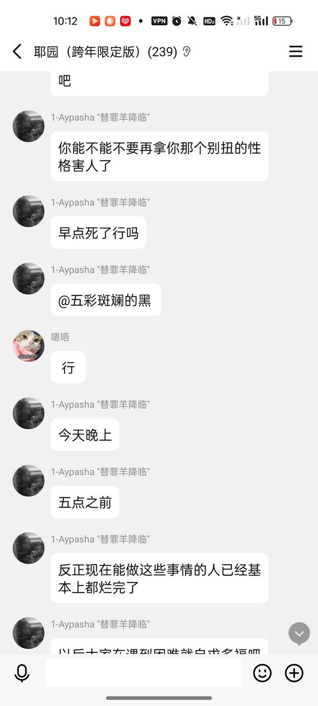
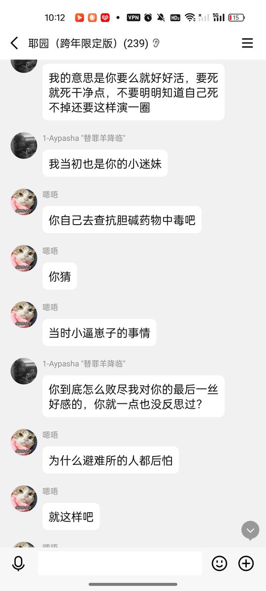

牧鸢
@LwrDHYyuxR22499
还有我们的傻篮子的弱智帕夏
在救援线下搞破坏吓跑记者逼人自杀
导致救援被严重拖延十五天
不敢当面对质只敢背后狗叫
事后认为我是基督徒所以不能追究他的责任🤣
下面附上这脑瘫逼人自杀得对话截图


胡桃夹子
@Homura_Alter
因为赖可这种畜生，自己巴结恶俗网左开盒我和我朋友，开不出来被我暴打一顿就说自己是受害者。
发律师函对我进行勒索，威胁把我送进去。送不成就造谣说我是红二代用特权迫害mtf。
自己高强度造谣，到处歪曲事实。甚至把自己拿假证偷渡被抓炒作成“政治迫害”。
如今这种人被你圈捧上神坛。 https://t.co/yunNbrXDGU